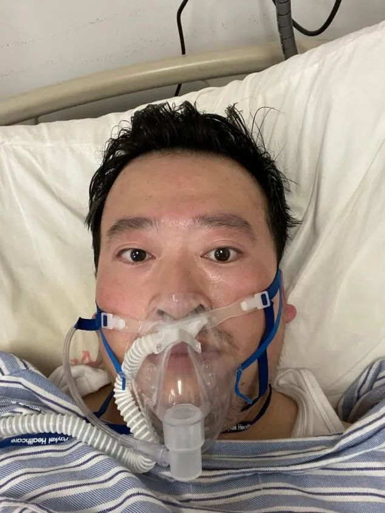
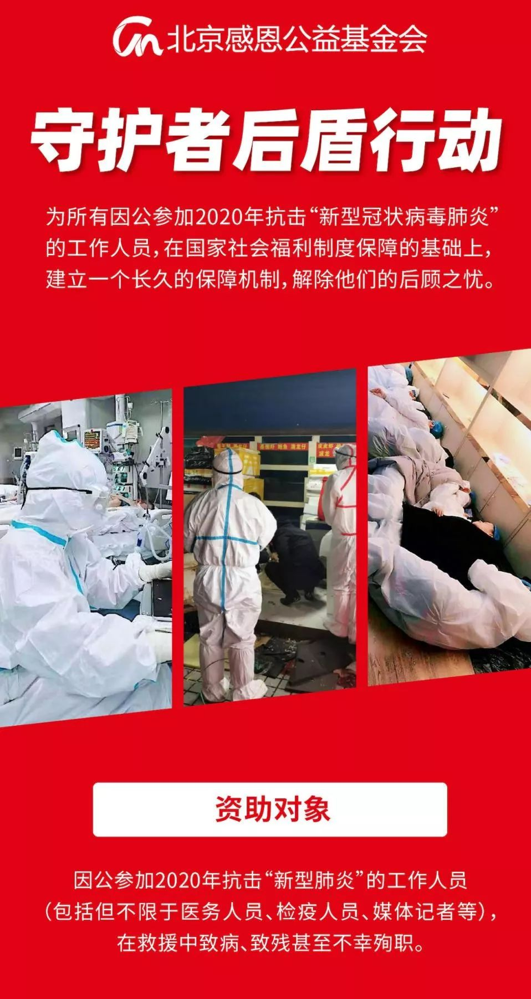

口述实录 | 香港女孩岑雅茵：大家都要平平安安，阿中哥哥加油！
原文链接 备份链接 总体而言，港人对待疫情，后来就没有内地那么紧张了。我妈妈讲，她觉得作为一个香港居民，自己最大的感受是彷徨。她抱怨道，在香港，没工开等于没饭吃了；公司起先通知放假到24号，何时复工再议，而现在仍然是等通知的状态。 …
做公益，只凭“鸡血”“热情”，这是不行的。
口述 | 周健（北京感恩公益基金会理事长）
整理 | 王煜
这些天以来，许多事情让我非常揪心。
湖南衡山县的乡镇医生宋英杰，连续十几天在抗疫岗位上工作，过劳去世，因公殉职时不满28岁。宋英杰的父母经营苗圃为生，因为疫情，从地里挖出来的树苗都卖不出去，这意味着一家人除了遭受精神重创，他们的实际生活也遭遇了巨大的困难。

宋英杰在抗击疫情岗位上的自拍照 来源 | 衡阳广电网
和宋英杰一样，现在几乎每天都有医护人员、基层干部、公安干警、媒体记者、志愿者等，在防疫一线冒着生命危险在战斗。而我们呢？付出的仅仅是时间和精力。我们是一家公益组织，该怎么帮助这些在疫情中做出贡献，而自身又因此面临困难的人和他的家庭？
1月下旬疫情刚开始爆发时，我就开始思考这个问题。在此前的汶川地震、芦山地震时，我都曾和伙伴们一起，直接把捐献的物资送到灾民手中；但我发现这次抗疫一线需要的医疗物资是非常专业的，我们没有专业的鉴别能力，很容易买到不符合要求的东西。如果用捐赠人的善款买到的是假货，这是我无法接受的。
所以，我们没有涉及物资的捐助，而是关注抗疫中具体的人。进入公益领域十多年来，我看到了灾难带给人的“后遗症”的许多真实情况。尤其是那些在救灾中做出贡献的人，应该得到公益组织持续的支持，我们不能和普通大众一样，基于情绪参与其中。这是专业的公益组织与社会大众的不同。
在灾难发生时，他们在聚光灯下被赞誉为英雄；而事情结束后，他们或者他们的家庭还要面临长期的实际困难，这不该被忽视。对于殉职人员，除了一次性支付的抚恤金之外，我们还要为他们的父母提供终身的赡养支持，为他们的未成年子女提供教育支持，直到大学本科毕业。
他们是疫情中所有人的守护者，而我们要做他们的后盾。按照这样的想法，我们发起了“守护者后盾行动”，1月27日（年初三）开始上线筹款。
后来我们觉得，除了关注因公致伤致残和殉职的一线人员，我们也应该关注那些在抗疫中做出特别贡献的人，又在项目中设置了“特别贡献支持”。
第一个“特别贡献支持”的资助者是李文亮医生，与他确认这项资助时，他还在住院治疗。他答应将他的相片形象授权给我们，去为这个项目筹集更多的善款。让人痛心的是他最后不治去世。“守护者后盾行动”将按项目设计，为他的家庭提供持续的支持。

李文亮发给周健的自拍照，摄于2020年2月3日 受访者供图
获得“特别贡献支持”的还有最早把新冠肺炎疫情上报疾控系统的湖北省中西医结合医院张继先医生和医院的临床业务管理团队共17人。我们还计划为100位在疫情一线“逆行”的媒体记者提供资助。希望大家能够记住他们的贡献。
目前我们已经搜集了全国各地370条需要帮助的人的线索，正逐条核实确认；已经资助了31人。每一项资助都要有规范完整和公开透明的程序，工作量真的非常大。现在整个基金会十几个全职人员与全国各地的150多名志愿者，都扑在这个事情上。我们有一个群，里面有190多个武汉因公感染新冠肺炎的医护人员，我们和他们保持联系，当他们需要时，我们立即提供支持。
从年初一到现在，我每天只洗澡不洗脸，睁开眼就坐到电脑前开始工作，饿了就随便吃点东西填填肚子。最忙的时候一天只能睡三四个小时，而且那几个小时我必须把手机关掉才能睡着，要不半夜也会不断收到各种要处理的信息。
这个项目在民政部门备案后，有些人觉得这件事“并不紧急”，不愿意支持；但是后来他们发现筹了不少钱但是买不到抗疫物资或者送不进去时，开始认同“支持具体的人”。目前项目已经筹集了3000多万元的善款，这来自400万人次的捐献，这个项目也开了行业的先河，现在陆续有不少其他的公益组织上线了对抗疫工作者的资助项目。

“守护者后盾行动”海报 受访者供图
这次疫情以来，我一直在想：近十几年来，我们国家的经济发展很快，老百姓手里的余钱多了，参与社会公共事务的意愿也逐渐在增强；整个国家的救灾能力也增强了很多。可是，公益组织在这次疫情里的整体表现，并不令人满意。
面对来自全国各地上百亿元的捐助，武汉的红十字会、慈善总会肯定是超负荷工作了，但这不是他们没有做好工作的理由。我相信志愿者团队、民间公益组织是有意愿有能力来协助做好这些工作的，但当地政府没有给民间公益组织足够的信任。
我们一些做物资捐赠的公益组织做得也不好。有些是从网上筹了几千万元，然后鼠标一点，转给当地红十字会或慈善总会就算参与了救灾。做得好一点的，通宵达旦地工作，在全世界买口罩，买完了，送到红十字会或慈善总会就算项目完成。
做公益，只凭“鸡血”“热情”，这是不行的。既然要捐献物资，就要把从募捐到受助人手里的全链条做好。当然这次的疫情和之前的地震等自然灾害不一样，因为防疫的要求，人要进到一线有更多的困难；但就算公益组织在外面的人进不去，就没有当地的志愿者可以对接吗？如果只会筹款和采购，却打不进一线，公益组织的战斗力又有多少呢？
2008年，5·12汶川地震的时候，我和新浪论坛联合发起了一个公益项目叫“灾区直通车”。我们第二天就开始从北京运送救灾物资到四川。我们第一批从北京出发的物资三百件免包扎绷带，13日夜里送到极重灾区的什邡人民医院，马上就用到了病人的身上。
后来，我们差不多运了上百趟飞机的救灾物资，基本上做到了北京头天捐赠，第二天就出现在四川灾民的手里。
诀窍是，我们知道当地政府都忙着去救埋在废墟里的人，根本没时间搭理我们，我们需要自己来做落地。“灾区直通车”第一趟飞机的物资还没有发出，我就委托成都的朋友陈妍，在当地组织了一支志愿者队伍，负责每天从双流机场把物资运到什邡。
他们每天去双流机场提三次货，从机场直接就运到什邡，在什邡救灾指挥部登记后，并不把货放到仓库完事，而是直接发到村里面，组织村民来分发。

周健（右一）在芦山地震救灾现场 受访者供图
后来，在2013年芦山地震中，我们也采用了同样的模式。我4月20日中午从北京飞成都，带着六车救灾物资到雅安的时候，已经是夜里十点半了。路被封了，武警设卡站岗，所有的车都进不去。我们当时用了最笨的办法，把救灾物资用三轮车、用板车，用人力，用蚂蚁搬家的方式，一点点搬运到关卡以内，一直忙到早上六点多。
如果这次疫情中，多一些公益组织能这样做，会不会好一些？
我们做公益，要对捐献者、对社会公众真诚。只说别人想听的话、老是蹭“热点”，那是更多心思放在谋求组织本身的利益上，不是做公益的初心。希望这次疫情中暴露出来的问题，能让更多公益人反思警醒。

征集令
《新民周刊》现面向全国征集新冠肺炎采访对象和真实故事：
如果你是参与抗击新冠肺炎疫情的医护人员或其家属，我们希望聆听你的“战疫”故事，也希望传达你的诉求。
如果你是确诊、疑似患者本人或家属，我们希望了解你和家人如何“抗疫”的过程，让外界了解你的真实经历。
如果你是疫情严重地区的普通市民，我们希望展现你的乐观，并倾听你所需的帮助。
如果你是公共服务人员或各类捐助者，我们希望看到你的“最美逆行”，记录下你的无私。
……
抗击新冠肺炎疫情，我们诚征对疫情了解的社会各界人士，提供相关线索，说出你的故事，让我们用新闻留存这一切。
《新民周刊》新冠肺炎线索征集值班编辑联系方式（添加时请简要自我介绍）：
周一：应 琛 微信号：paulineying0127
周二：金 姬 微信号：gepetta
周三：黄 祺 微信号：shewen-2020
周四：周 洁 微信号：asyouasyou
周五：孔冰欣 微信号：kbx875055141
周六：吴 雪 微信号：shyshine1105
周日：姜浩峰 微信号：jianggeladandong
✳如你需要捐赠物资，可与以下两位工作人员联系:王勇：WangYong-SH 吴轶君：rommy150708（添加时请注明“捐物资”，方便工作人员快速通过您的申请，谢谢。）
新闻是历史的底稿，你们是历史的见证者。期待你的故事、你的线索！

▼
大家还都在看这些
▼
新民周刊所有平台稿件， 未经正式授权
一律不得转载、出版、改编
或进行与新民周刊版权相关的其他行为，违者必究


原文链接 备份链接 总体而言，港人对待疫情，后来就没有内地那么紧张了。我妈妈讲，她觉得作为一个香港居民，自己最大的感受是彷徨。她抱怨道，在香港，没工开等于没饭吃了；公司起先通知放假到24号，何时复工再议，而现在仍然是等通知的状态。 …
原文链接 备份链接 2020年2月15日，陈行甲受邀参加乡村发展基金会联合研究院以及北大汇丰商学院推出的“明日地平线X创讲堂”行动，传播科学知识和创新理念。 这是一场特别的线上大讲堂，这是一个在湖北长大、求学、入党、工作的地道湖北人分享的 …
原文链接 备份链接 疫情危机再一次提醒我们，在公共卫生方面，从政府、社会到公众，我们还有很多功课未能完成。 作者 | 朱纪明 程峰（清华大学医学院公共健康研究中心） 编辑 | 徐菁菁 药物和疫苗不一定“特效” 身在疫情中，大众的期待是特效 …
原文链接 备份链接 澎湃新闻记者 何利权 实习生 粟满莺 李佳悦 因缺乏物资，都安县医护人员自制防护用品。 因新冠肺炎确诊患者在短期内陡增，且感染人数占到所在市（州）的绝大部分，个别位置偏僻的贫困县正面临着一场艰难的“战疫”。 截至2 …
原文链接 备份链接 从1月23日“封城”到元宵节，已经过去整整17天。即使我每天忙于记日记，也觉得时间过得很快啊。 过去我要早起，6点起床，7点到办公室，不堵车。现在则是天天睡到自然醒，有点提前退休的感觉。虽然我还有两年上班的时间。 …